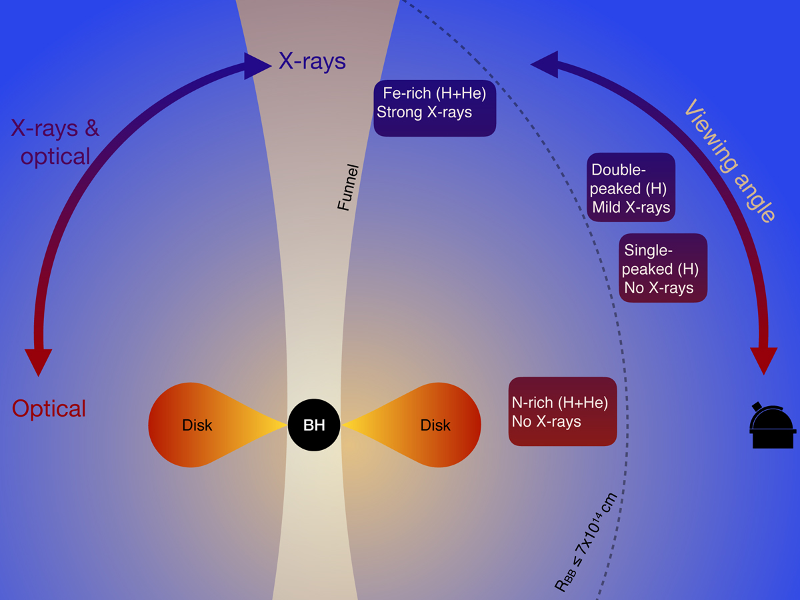
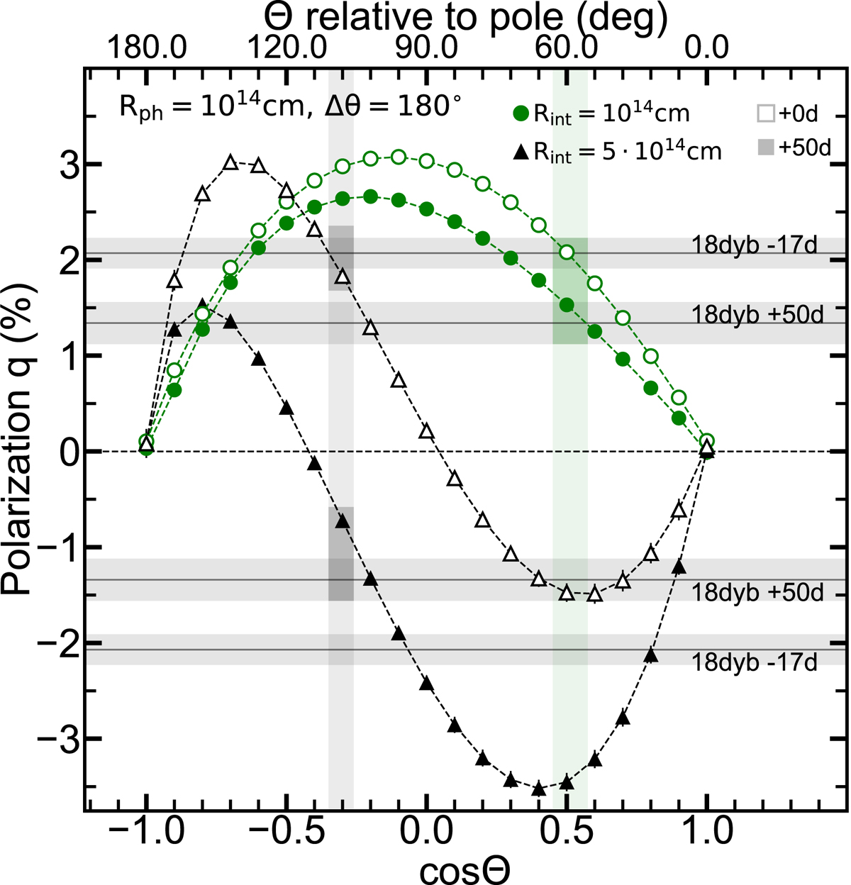
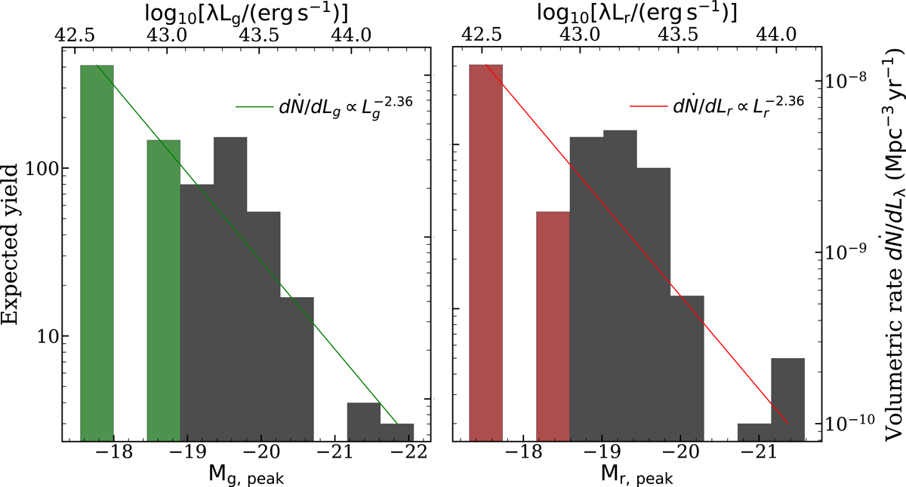
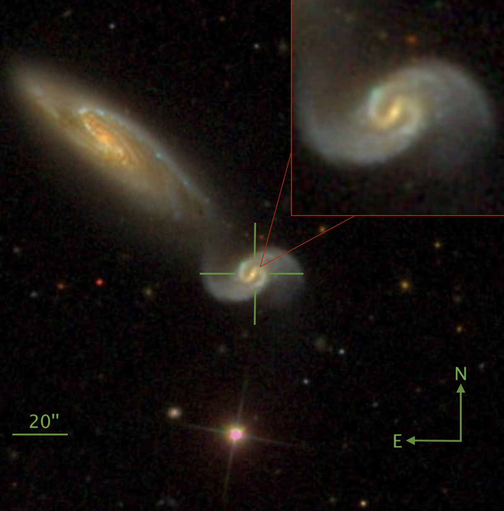

Tidal Disruption Events
Supermassive black holes lurk in the nuclei of galaxies. We have one in the nucleus of our own Milky Way! Tidal disruption events are what happens when a star wanders too close to such a supermassive black hole and the tidal forces across the star become stronger than its own self-gravity. So, instead of being swallowed whole, the star rips apart, gets stretched into a long stream of gas, part of which falls back and gets messily devoured, producing a bright flare that can outshine the whole galaxy. It's one of the few times a quiescent black hole announces itself directly, rather than through the motions of stars orbiting it.
Although we are observing TDEs in the optical for almost two decades now, the emission mechanism still remains elusive. This remains a major limitation in fully realising the potential of TDEs: to measure black hole masses across Cosmic time.
Selected results
A spectroscopic sample study of TDEs
For the first project of my PhD, I carried out the first systematic, detailed spectroscopic study of TDEs, examining sample-wide properties such as line widths, velocity offsets, luminosities, and line ratios (e.g. He II to Hα, He II to He I), along with how these depend on TDE temperature and radius and evolve over time. The study also revealed that time lags — light echoes — between the spectral lines and the continuum are a common feature of TDEs. Finally, we attempt to show how, potentially, all the different spectroscopic subclasses of TDEs with their unique and diverse spectral features, might fit the reprocessing, viewing angle dependant emission mechanism scenario (see a schematic Figure on the right). It remains the only comprehensive sample study of TDE spectra published to date. And it made it to the journal's yearly highlights!
When the paper was published, I made publicly available to the community, the biggest, reduced and analysed tidal disruption event spectral dataset to date (246 spectra).

Modeling the polarisation of TDEs
One promising way to test the different scenarios responsible for the emission mechanism in TDEs is through is polarisation — a measurement of whether the light coming from the event has a preferred orientation, which depends on the shape and geometry of the glowing material and on the angle we happen to be viewing it from.
I wrote a paper using simulations to predict what those polarisation signals should look like under one specific proposed picture of how TDEs shine: the so called collision-induced outflow model. By varying the size and geometry of that shell and modelling how light scatters through it, the paper shows that TDEs with a lot of infalling stellar debris should have low, hard-to-detect polarisation, while those with less debris can show much higher, more easily measurable polarisation — and that the level and behaviour of that polarisation depend sensitively on the viewing angle. Comparing these predictions against a handful of real TDEs with existing polarisation measurements, the model reproduces the observed trends reasonably well, suggesting that multiple observations of the same event over time could eventually help pin down the angle from which we're viewing these stellar death spirals.

The population of faint and fast TDEs and their rates
This paper introduces AT2020wey, the fastest-declining tidal disruption event (TDE) found until then, and about as faint as the previous record-holder — meaning stars getting shredded by black holes don't always put on the bright, slow show astronomers had come to expect. That matters because most TDE surveys are biased toward finding the brightest events.
Using this object as a case study, the paper corrects for that bias across a larger sample of TDEs, essentially asking: if faint events like this one are this hard to find, how many are we missing? The answer is a lot — faint TDEs turn out not to be rare at all, but likely make up roughly half of the whole population once you account for how much harder they are to spot at greater distances. From this, we derive a "luminosity function" which is an estimate for how often these events actually happen per galaxy per year — a number that has long run about ten times lower than theory predicts. Folding in the missing faint population helps close some of that gap but doesn't full resolve the tension.

A detailed study of the most closeby TDE to-date
This paper presents AT2023clx, the closest optical/UV TDE ever recorded, sitting in the nucleus of a nearby galaxy that turned out to be actively merging with a neighbour — a messier environment than the quiet, isolated galaxies where these events are usually found. Its most striking property is speed: it reached peak brightness faster than any tidal disruption event on record, and given a careful black hole mass estimate that rules out a small "intermediate-mass" black hole as the explanation, the paper argues the fast rise instead points to the destruction of an unusually small, low-mass star — comparable to a brown dwarf — rather than anything unusual about the black hole itself.
Two more oddities stand out: a sharp, narrow spectral feature never seen before in a tidal disruption, interpreted as a fast-moving clump of gas racing ahead of the main debris outflow; and an early dip in temperature, previously seen in only one other, far more extreme black hole flare. The paper's picture: a tiny star gets shredded efficiently, quickly forms a compact disk, and we're viewing it nearly along the outflow's axis — also explaining the missing X-rays. It also flags a practical lesson: automated survey pipelines nearly dismissed this discovery (even though it was the most closeby TDE to-date!) because the host galaxy was pre-tagged as an active black hole, a reminder that current classification shortcuts risk missing real disruptions hiding in already-active nuclei.
